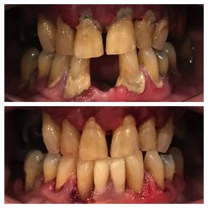
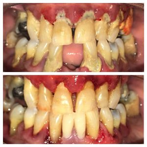

Although there are many different diseases that affect the tooth-supporting structures, plaque-induced inflammatory lesions make up the vast majority of periodontal diseases. They have traditionally been divided into two categories, gingivitis or periodontitis, and can affect one tooth or many teeth.
Gingivitis is a reversible and more mild form of periodontal disease that affects only the gums. In many patients, an inflammatory overreaction to oral bacteria results in the body, in essence, turning on itself and destroying the tooth-supporting tissues.
When the periodontal destruction has reached the underlying bone, the condition has progressed to the more serious form of gum disease called periodontitis. The gums eventually separate from the teeth, forming pockets (spaces between the teeth and gums) of infection.
As the disease progresses, the pockets deepen and more gum tissue and bone are destroyed. Often this destructive process has very mild symptoms to no symptoms and the disease progresses unbeknownst to the patient. Eventually, due to loss of support, the teeth can become loose and may have to be removed.
More than one in three people over the age of 30 have a form of periodontal disease that has advanced beyond gingivitis.
However, because periodontal disease develops silently and painlessly, the majority of people do not even realize they have it.
Periodontitis is the leading cause of tooth loss in adults living in the developed world and should be taken very seriously for that reason.
Additionally, accumulating research also links periodontal diseases to general health conditions such as cardiovascular disease, stroke, diabetes, respiratory disease, and preterm low birth weight births.
The main cause of periodontal diseases is bacteria found in plaque, a sticky, colorless film that constantly forms on your teeth. However, other factors can also affect your periodontal health:
- Smoking/tobacco use
- Genetics
- Puberty, pregnancy, and menopause in women
- Stress
- Clenching or Grinding Your Teeth
- Diabetes
- Poor Nutrition
Symptoms of Periodontal Disease
Because symptoms may not occur until the disease is advanced, it is possible to have periodontal disease and have no warning signs. This is one of the reasons why regular dental checkups, which include periodontal examinations, are very important. When warning signs are present, they may include the following:
- Bleeding gums – Gums should never bleed, even when you brush vigorously or use dental floss.
- Loose teeth – Also caused by bone loss or weakened periodontal fibers (fibers that support the tooth to the bone).
- New spacing between teeth – Caused by bone loss.
- Persistent bad breath – Caused by bacteria in the mouth.
- Pus around the teeth and gums – A sign that there is an infection present.
- Receding gums – Loss of gum around a tooth.
- Red and puffy gums – Gums should never be red or swollen.
- Tenderness or Discomfort – Plaque, calculus (tartar), and bacteria irritate the gums and teeth.
Types of Periodontal Disease Treatment
Treatment methods depend upon the type of disease present and how far the condition has progressed. If diagnosed and treated in the early stages, simple nonsurgical periodontal therapy may be sufficient. If periodontitis has advanced to the point where the periodontal pockets are deep and significant amounts of bone are lost, surgical therapy may be necessary.
Good oral hygiene at home is essential to help keep periodontal disease from becoming more serious or recurring. Home care alone, however, is usually insufficient for controlling the bacterial infection below the gum line where your toothbrush, dental floss, and other oral hygiene aides do not reach. Once the bacteria have colonized below the gum line, specialized dental instruments are needed for their removal.
There are several different methods for treating periodontal diseases:
Nonsurgical treatments
- Prophylaxis is a routine dental cleaning performed on patients with normal, healthy mouths to maintain health and prevent the initiation of dental diseases. Traditionally, it has also been utilized for the management of mild gingivitis patients who do not have significant calculus (tartar) built up below the gum line.
- Scaling and root planing is a careful cleaning of the root surfaces to remove plaque, calculus (tartar) and bacterial toxins from deep periodontal pockets. Nonsurgical therapy does have its limitations, so the areas that have not responded favorably to scaling and root planing may require further treatment. Because of the complex anatomy of the root surfaces below the gum line, scaling and root planing is a much more demanding procedure than a prophylaxis. It is often necessary to perform the scaling and root planing treatment over the course of more than one appointment and with the adjunctive use of local anesthesia so that a thorough job can be performed in a comfortable manner for the patient. This was done in the following case to stabilise the periodontal condition ( as a patient attended with severe gum disease)
- Periodontal maintenance is a specialized program developed for each patient once periodontal health has been improved. It is designed to prevent periodontal disease from recurring in patients who have undergone treatment for periodontitis or dental implant therapy. This ongoing phase of treatment will allow the doctors and hygienists to assess your periodontal health and make sure the infection stays under control. Periodontal diseases are chronic diseases, much like diabetes. Without careful, ongoing treatment, periodontal diseases can and often do recur.
- Other surgical periodontal options are available once the periodontal condition is stable.
How can periodontal diseases be prevented?
Good oral hygiene and professional care are the keys to keeping your teeth for a lifetime. The best way to prevent periodontal diseases and tooth decay is thorough brushing and flossing every day. Good oral hygiene habits will help keep the formation of dental tartar to a minimum. Regular dental visits that include a periodontal examination are also important to detect any changes in periodontal health and, if necessary, to remove hardened tartar in places that your toothbrush and floss may have missed. A professional cleaning (prophylaxis), at least twice a year, is recommended for patients with good periodontal health. If you have had any form of periodontal disease or a high incidence of cavities in the past, you may need professional maintenance more frequently.
Preventing and/or controlling periodontal disease is a worthwhile commitment that will keep you smiling for life.
 